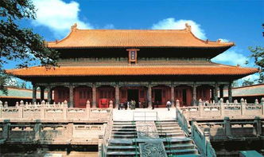

蓬莱仙境
蓬莱是中国著名的海滨风景旅游城市和历史文化名城，文化积淀深厚，文物古迹众多，有驰名中外的中国古代四大名楼之一：蓬莱阁；有迄今保存最完整的中国古代水军基地——蓬莱水城；有民族英雄戚继光表功祠和戚氏牌坊。
泰山
泰山又名岱山、岱宗，位于山东省中部，隶属于泰安市，绵亘于泰安、济南、淄博三市之间，是世界自然与文化遗产，世界地质公园，国家5A级旅游景区，国家级风景名胜区，全国重点文物保护单位，全国文明风景旅游区，是中华民族的象征，是东方文化的缩影，是“天人合一”思想的寄托之地，是中华民族精神的家园。有“五岳之首”、“五岳之长”、“天下第一山”之称。

孔庙
曲阜孔庙又称“阙里至圣庙”，与南京夫子庙、北京孔庙和吉林文庙并称为中国四大文庙。它始建于公元前478年，以孔子故居为庙，岁时奉祀。西汉以来历代帝王不断给孔子加封谥号，孔庙的规模也越来越大，成为全国最大的孔庙。